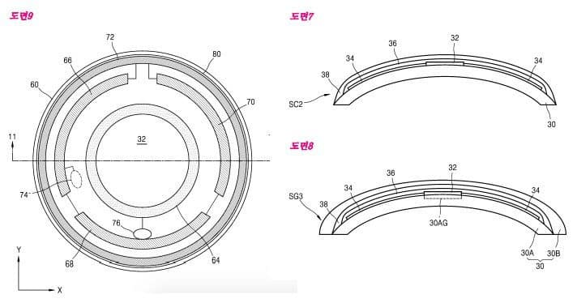
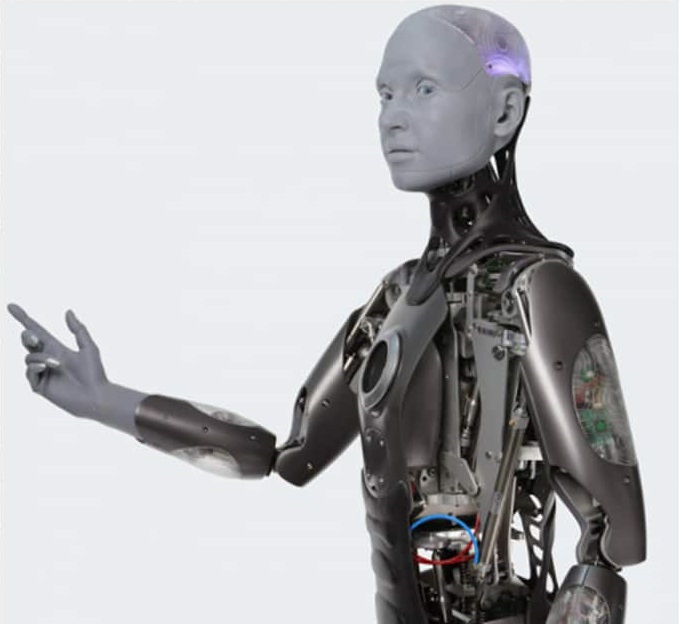
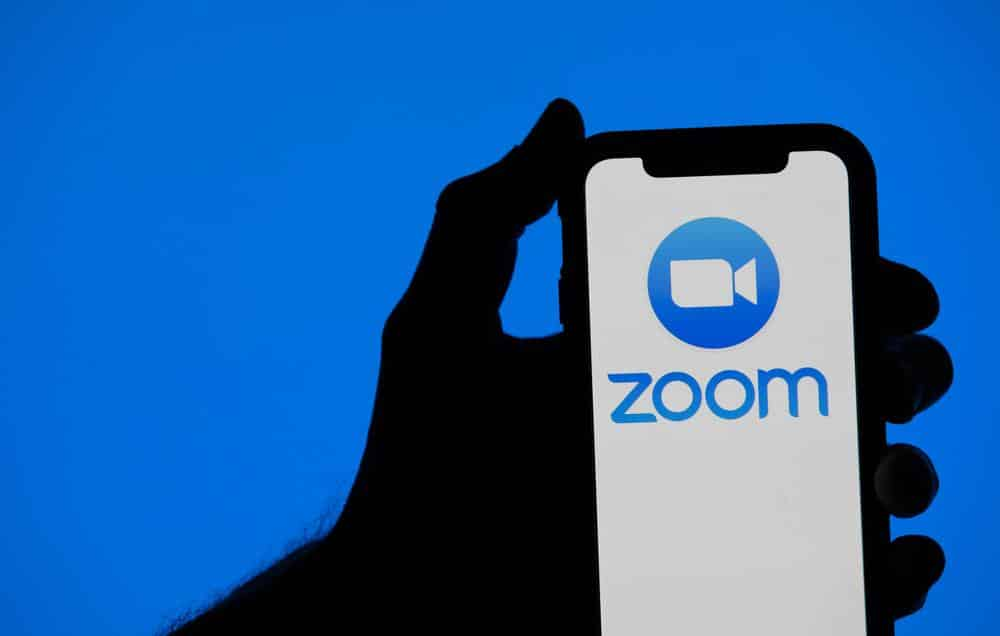

Lente de Contato Inteligente

04/01/2022 | Publicado e Modificado pelo Ighor Drummond
já pensou em ter uma lente de contato que apenas uma piscada você pode fotografar os melhores momentos?
bem, a samsung já chegou a projetar uma lente mas não chegou a revelar ela oficialmente ao publico,
o projeto vou desvendado por uma patente em 2014 da propria marca, os documentos relatam o funcionamento e ainda afirma ser um estilo de google glass
que projeta imagens direto no seu olho, imagina ter um desses nos seus olhos? um "cyberpunk 2077" da vida real.
Empresa cria Robo Humanoide com Expressões Faciais Realistas

04/01/2022 | Publicado e Modificado pelo Ighor Drummond
o robo ameca se tornou noticia mundial recentemente por ter expressões faciais e corporais muito identicas ao serhumano comum,
a empresa ameca que construiu e que programa ele atualmente diz que o robo ainda não é capaz de andar.
“Há muitos obstáculos a serem superados antes que Ameca consiga andar”, explica a empresa.
“Caminhar é uma tarefa difícil para um robô e, embora tenhamos feito pesquisas sobre isso, não criamos um humanoide ambulante completo”.
Universitarios ensinam peixinhos a dirigir um veiculo em terra

04/01/2022 | Publicado e Modificado pelo Ighor Drummond
Estudantes da universidade Ben-Guurion do negev, uma universidade publica de israel,
conseguiram com sucesso ensinar um peixe dourado dentro de um aquario a "dirigir" um veiculo 4 rodas apenas analisando o ritmo do corpo do animal,
conforme o pequeno animal nadava em direção as paredes,
o tanque que estava equipado com uma camera de movimentos detequetava e traduzia em codigos para qual direção o veiculo iria seguir,
dando capacidade de direção para qual lado o peixe iria conduzir o veiculo. bem, será ele um peixonauta? brincadeiras a parte,
é um estudo incrivel e interessante para estudos futuros.
Zoom investe em ferramente para receber grandes eventos

04/01/2022 | Publicado e Modificado pelo Ighor Drummond
Se o Zoom se tornou uma das maiores plataforma de chamadas do mundo graças a pandemia da covid-19,
isso ninguem tem duvidas,
mas agora que a empresa sabe que está no "palco da fama" já está pensando em projetos grandes para atender seus clientes,
a zoom comprou recentemente a empresa Liminal com intuito de expandir mais suas ferramentas para o digital e presencial.
a empresa quer que seus usarios continuem na plataforma após o fim da pandemia
para que o zoom não caia em declinio e continuem a ser usado até presencialmente.